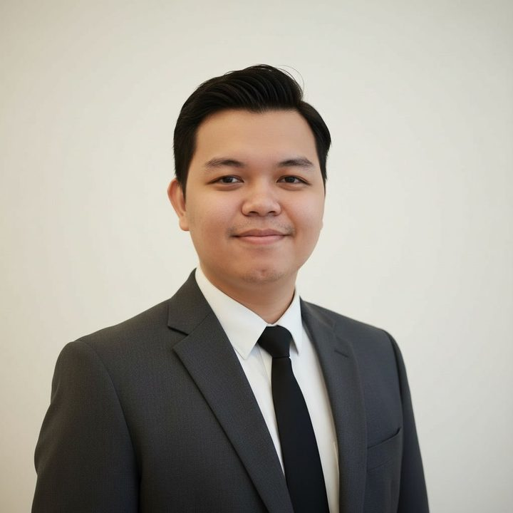

Saya membangun web yang rapi, cepat, dan mudah ditemukan.
Lulusan D3 Sistem Informasi dengan IPK 3,96 dan sertifikasi Front-End Web Developer level Mahir. Saya menggabungkan pengembangan front-end, basis data, dan SEO untuk membuat produk digital yang berguna bagi penggunanya.
<!-- front-end --> <section class="hero"> <h1>Web yang rapi</h1> <a href="#work">Karya</a> </section> /* SELECT * FROM voucher */
Top Up Game
86 DiamondRp 20.000
172 DiamondRp 40.000
344 DiamondRp 80.000
Bayar sekarang
Traffic organik+35%
Karya Terpilih
4 Proyek
Pilih voucher
86 DiamondRp 20.000
172 DiamondRp 40.000
344 DiamondRp 80.000
706 DiamondRp 160.000
Status pesananBerhasil
Web App · Basis Data · 2023–2024
Top Up Voucher Game Online
Proyek tugas akhir berupa sistem penjualan voucher game berbasis web. Saya merancang basis data relasional (MySQL) dan alur transaksi online, lalu menguji sistem dengan black-box testing dan menyusun dokumentasi antarmuka.
Profil penulis IndozonePage views bulanan, Jan 2024 – Feb 2025Ringkasan: peringkat 1 page views di tim
Technical Content · SEO · 2020–Sekarang
Optimasi SEO di Indozone
Sebagai Technical Content Specialist, saya menyusun strategi SEO berbasis riset kata kunci dan analisis tren pembaca. Saya menulis panduan teknis berdasarkan user search intent dan mengoordinasikan standar dokumentasi tim penulis. Geser slide untuk melihat buktinya.
Saya mendirikan komunitas belajar coding interaktif di Discord untuk mahasiswa. Tujuannya memperkuat pemahaman logika pemrograman dan sistem lewat diskusi dan latihan bersama.
Memimpin HIMSI Universitas Bina Sarana Informatika dan mengeksekusi program kerja di bidang edukasi dan teknologi secara tepat waktu bersama seluruh anggota.
Riset kebutuhan, analisis data pembaca atau pengguna, dan pemetaan alur informasi.
Rancang
Pemodelan proses bisnis, desain basis data, dan rancangan antarmuka.
Bangun
Implementasi front-end dengan HTML, CSS, JavaScript, dan Git untuk versioning.
Uji & Dokumentasikan
Pengujian black-box, dokumentasi teknis, dan perbaikan berdasarkan data performa.
Teknologi yang baik bukan yang paling rumit, tetapi yang paling mudah dipakai dan ditemukan orang.
Tools & Skills
Pengembangan
Front-End Web DevelopmentVisual Studio CodeGit / GitHubMySQLDevOps BasicsBlack-box Testing
Data & Konten
SEOGoogle AnalyticsMeta Ads ManagerMicrosoft ExcelMicrosoft WordGoogle WorkspaceMeta Business Suite
Sertifikasi
3 Sertifikat
Front-End Web Developer (Mahir)
DBS Foundation Coding Camp 2024 × Dicoding. 110 jam pembelajaran.
18 Desember 2024
Belajar Dasar-Dasar DevOps
Dicoding Academy. Dapat diverifikasi di dicoding.com/certificates/07Z602JQMZQR.
19 September 2024 · berlaku hingga 2027
TOEFL ITP®, skor 617
ETS / IIEF Jakarta. Listening 66, Structure 56, Reading 63.
6 November 2025

Tentang Saya
Raden Muhammad Nizar Yanuar Saputra, A.Md.Kom.
Saya lulusan D3 Sistem Informasi Universitas Bina Sarana Informatika, Kampus Kota Bogor, dengan predikat Pujian. Sejak 2020 saya bekerja sebagai Technical Content Specialist di Indozone, dan sejak 2024 saya memperdalam front-end web development dan DevOps. Saya senang memimpin komunitas, mendokumentasikan hal teknis dengan jelas, dan memakai data untuk mengambil keputusan.
3,96IPK dari 4,00, predikat Pujian
617Skor TOEFL ITP (Advanced)
100+Artikel teknis peringkat 5 besar Google
Pengalaman & Pendidikan
Januari 2020 – Sekarang · Jakarta
Technical Content Specialist, Indozone
Menaikkan traffic organik 35%, mengoordinasikan tim penulis, dan menganalisis performa konten harian.
2023 – 2024 · Bogor
Pengembang Sistem, Proyek Tugas Akhir
Sistem penjualan voucher game berbasis web dengan basis data relasional dan alur transaksi online.
Semester 2–4 · Bogor
Ketua HIMSI, Universitas Bina Sarana Informatika
Memimpin 30+ anggota dan mendirikan komunitas belajar coding dengan 100+ mahasiswa.
Lulus Februari 2026 · Bogor
D3 Sistem Informasi, UBSI Kampus Kota Bogor
Gelar Ahli Madya Komputer. Praktik kerja lapangan di PT Telkom Indonesia, Tbk. Akreditasi universitas dan program studi: Unggul.
Menaikkan traffic organik web sebesar 35% lewat riset kata kunci dan analisis tren pembaca.
Indozone · Technical Content Specialist
Mempercepat pemrosesan transaksi pengguna hingga 50% lewat rancangan basis data dan alur transaksi yang efisien.
Proyek tugas akhir · Top Up Voucher Game
Memimpin 30+ anggota mengeksekusi 5+ program kerja tahunan di bidang edukasi dan teknologi.
HIMSI · Ketua
Menyelesaikan 34 mata kuliah dengan nilai A pada 33 di antaranya, lulus dengan IPK 3,96 dan predikat Pujian.
Transkrip akademik · UBSI
Mari Bekerja Sama
Saya terbuka untuk peluang penuh waktu di bidang Teknologi Informasi, front-end development, dan operasional digital. Hubungi saya lewat salah satu kanal di bawah.